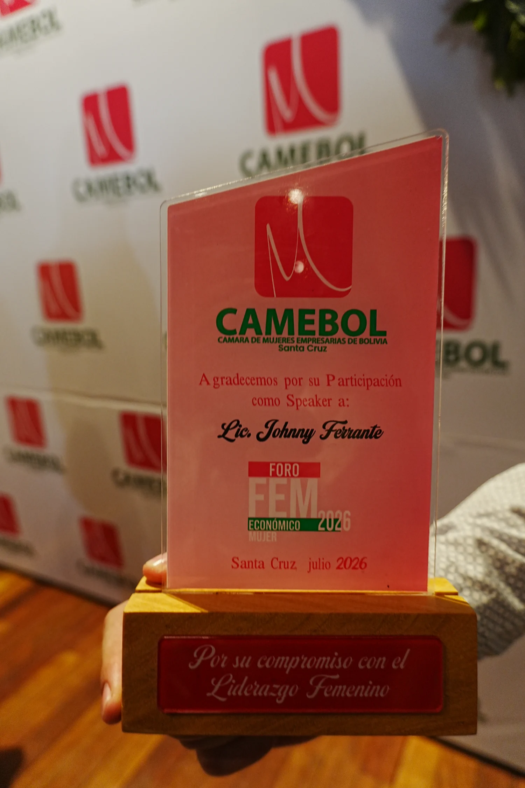
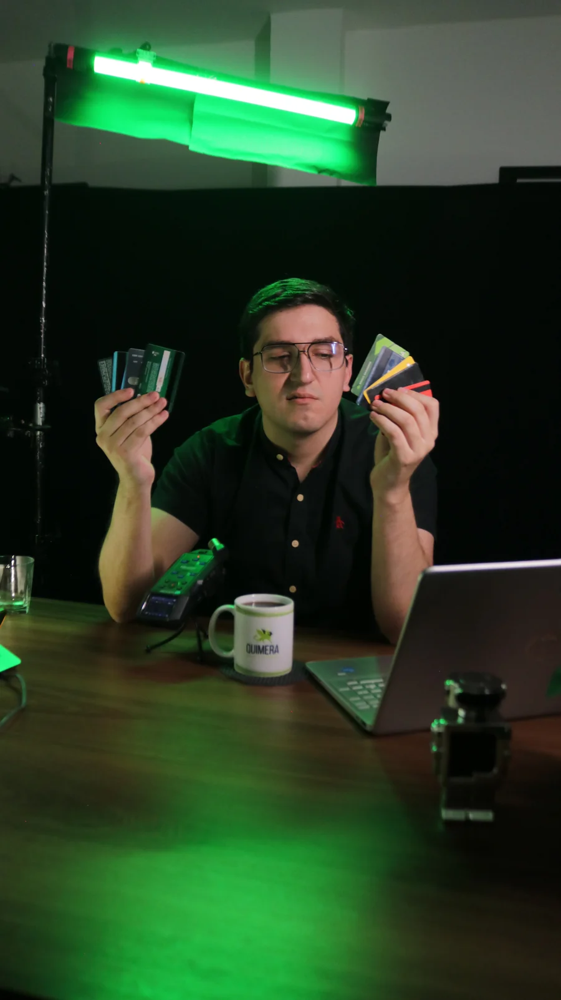
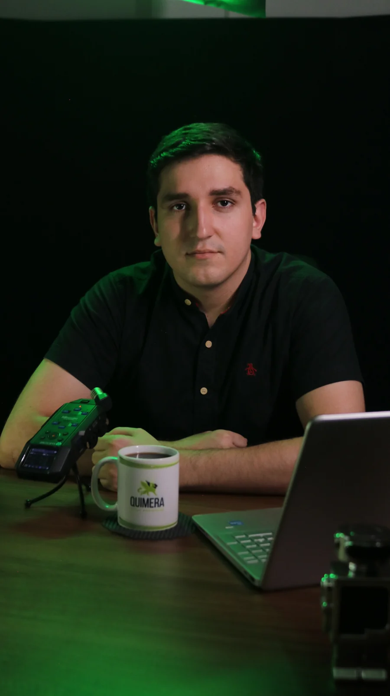
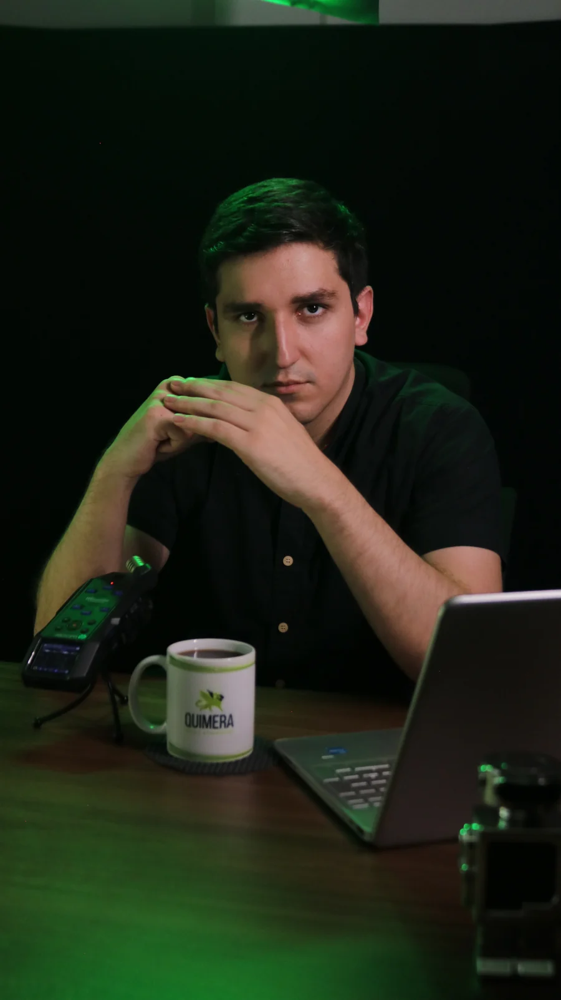

Tu CRM
Tus clientes y tu proceso de ventas ordenados, sin pagar por usuario.
Agentes que atienden y venden a toda hora. Procesos que dejan de hacerse a mano. La foto real del negocio en una sola pantalla. No cursos ni teoría: sistemas que quedan funcionando.
Santa Cruz · Miami · Silicon Valley · Lima
Marcas que ya nos dejaron entrar a sus operaciones
La mayoría de las empresas viven pegando parches: una app para esto, otra para aquello, planillas sueltas. Pagás todos los meses y seguís dependiendo de otros.
Tu equipo copia datos de una planilla a otra todo el día.Eso lo hace un flujo, no una persona.
Entran consultas por WhatsApp a las 11 de la noche y se contestan al otro día.Eso lo atiende un agente, al instante.
Decidís con los números de la semana pasada, armados a mano.Eso lo resuelve un tablero que se actualiza solo.
Pagás mensualidades que suben y tus datos viven en servidores ajenos.Eso se termina cuando el sistema es tuyo.

«Agradecemos por su participación como Speaker a Lic. Johnny Ferrante. Por su compromiso con el liderazgo femenino.»
En julio de 2026 la Cámara de Mujeres Empresarias de Bolivia invitó a nuestro CEO a explicar, frente a la sala, cómo la inteligencia artificial transforma empresas. Esta web es la continuación de esa charla.
Un solo sistema, integrado, hecho a la medida de cómo trabaja tu empresa. Tu sistema, tus datos, tu infraestructura.
Tus clientes y tu proceso de ventas ordenados, sin pagar por usuario.
Finanzas, inventario, equipo y facturación en un solo lugar.
Responden en WhatsApp y en tu web a toda hora, con tu información.
La foto completa del negocio en una pantalla, actualizada sola.
Respondés tarde. No queda anotado en ningún lado. Nadie sabe cuántos entran por día. El problema no es que te escriban mucho: es que no hay una estructura que lo sostenga.
Lo que hace un agente bien configurado, solo
«Mientras dormís, el sistema trabaja y responde por vos.» Dicho en cámara · reel de campaña
Estos sistemas están corriendo ahora mismo, con clientes usándolos todos los días. Podemos mostrarte cualquiera en vivo durante la reunión.
Founder & CEO. Es quien da la charla, quien toma el diagnóstico y quien firma lo que se construye. Si trabajás con nosotros, hablás con él.



«Vamos a tu empresa, te auditamos y te hacemos una propuesta a medida.» Johnny Ferrante
Nadie compra un sistema por catálogo. Primero hay que ver cómo trabaja tu empresa hoy: qué se hace a mano, dónde se pierde el tiempo, qué datos existen y cuáles no. De ahí sale la propuesta — y recién ahí tiene sentido hablar de precio.
Y lo hacemos en persona. Somos un proveedor que podés ver cara a cara, no una agencia que solo aparece en tus anuncios.
A tu oficina, tu planta o tu local. Sin costo y sin compromiso.
Miramos cómo trabajás hoy y dónde se está yendo el tiempo.
A medida de lo que encontramos, con alcance y precio escritos.
Vamos a tu empresa, miramos cómo trabajás hoy y salís con una propuesta escrita. Sin costo y sin compromiso.
Pedir la auditoría →Lo ámbar es lo que no pude verificar o lo que hoy está falso en producción. Nada está inventado.
Bloqueantes · hoy falsos en el sitio livewa.me/59170000000.calendly.com, no a una agenda.hola@quimera.com, otro dominio.cleverf200@gmail.com desde onboarding@resend.dev y los logs no registran ni un lead enviado nunca..topbar y footer no llevaban el padding lateral del contenido, y .phero centraba a sus hijos dentro de un padding — el .kicker, al ser inline-flex, ni se centraba.mix-blend-mode:lighten dibujaba la caja. Ahora el asset va recortado y con el desvanecido horneado en el alfa.--maxw pasó de 1300 a 1560. En una pantalla de 1610 el margen izquierdo bajó de 380px a 97px, así que el hero deja de "flotar al medio". Es una sola variable en quimera.css: subila o bajala y se mueve todo junto..bio-glow) en lugar de la franja del techo que traía la foto, más saturación en el retrato y el calado FERRANTE más marcado.clamp(60px,7.5vh,104px) arriba y abajo.tools/serve.py) + ?v= en el CSS y el JS: el navegador ya no puede mostrarte una versión vieja. Con F5 alcanza.mix-blend-mode y el halo. Ahora es la toma con el tubo de luz verde real (IMG_2359 del set de estudio), presentada como foto. Si preferís la de las tarjetas es cambiar una línea (IMG_2358).100 mensajes («eso no es crecimiento, eso es caos») y la solución de ia - kristel. Los cuatro verbos —responde, califica, informa, agenda— son literalmente los de ella.ia 1 ferrante. El sitio live solo ofrecía «agendá una llamada», que es pedirle el paso 5 a quien está en el paso 1.#81DE00 de la marca. Se nota al reproducirlos. Se puede regradear con ffmpeg o dejarlo así asumiendo que es material de redes.boca a boca dice «En Quimera Marketing» — marca vieja. Inutilizable con sonido.